Project 1: Visual Representations and CLIP
Part 1: Understanding a Pretrained Vision Transformer
Task 1: Image patches and model inputs
I resized the image using bilinear interpolation and center-cropped it to a 224 × 224 pixel square. I then divided it into non-overlapping 16 × 16 pixel squares, as shown in Figure 1 below.
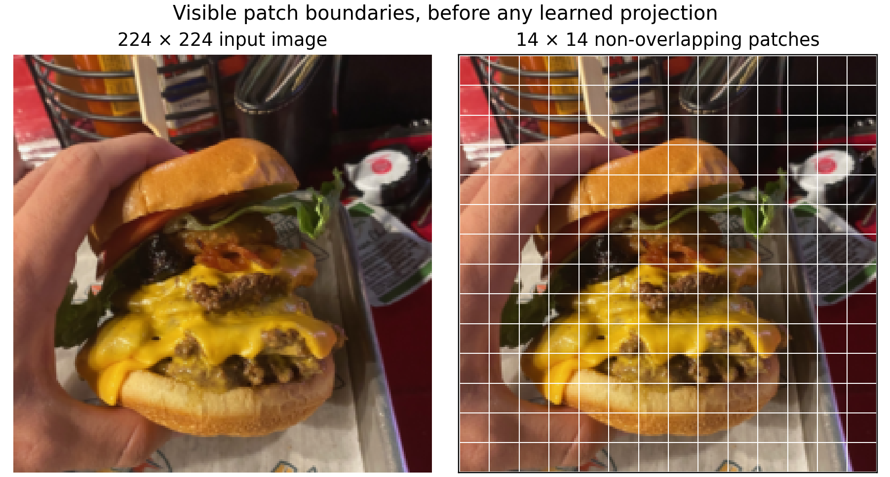
There are 224 ÷ 16 = 14 patches along each side, so the image yields 14 × 14 = 196 patches. One classification (CLS) token is added, giving the Transformer a sequence of 197 tokens.
What the model does with the patches
Patch projection: Figure 1 shows each patch as a two-dimensional 16 × 16 pixel crop. In the model, each patch is actually flattened into a vector (of length 256) for each channel in the RGB image, resulting in a vector of length 256 x 3 = 768. A learned linear transformation converts that vector into a token vector which is input into the transformer. In this task, the patches remained in two dimensions, while the actual projections input into the transformer are one dimensional vectors.
Positional embeddings: A learned position vector is added to each token so the model can use the patches’ locations after the image becomes a sequence. This sinusoidal embedding allows the model to know the position of each patch, providing spatial information.
CLS token: A learned token is placed at the start of the sequence. The transformer, through training, learns to extract the global representation of the image in the CLS token, allowing individual patch tokens to attend to the CLS token as necessary.
Task 2: Predictions on a small image collection
I used 30 of my own images taken on my own phone: 8 labeled banana, 6 cheeseburger, 6 lakeside, 5 pizza, and 5 street sign. The data summary is shown in the table below.
| My label | Images | Imagenet Class Index |
|---|---|---|
| banana | 8 | banana (954) |
| cheeseburger | 6 | cheeseburger (933) |
| lakeside | 6 | lakeside (975) |
| pizza | 5 | pizza (963) |
| street sign | 5 | street sign (919) |
I applied softmax over all 1,000 output scores and report the top five labels and percentages for each image.
Top-one accuracy
Seventeen of 30 images have a top-one ImageNet label matching their assigned category, meaning the top-one accuracy is 56.7%. While this is a low accuracy, it is relatively good due to the large number of classes. Some images are also very difficult to predict as the true class is not the main object in the image.
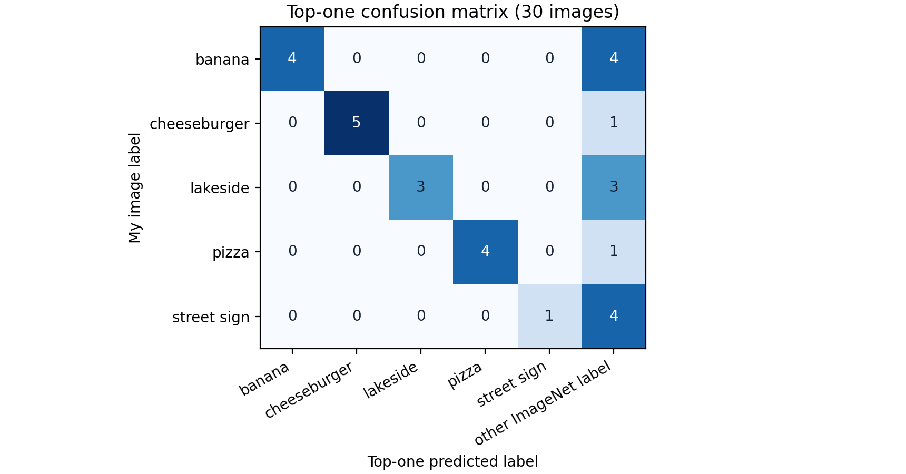
Predictions for each image
The image cards below show the label and top-five predictions for every tested image.
banana (8 images)
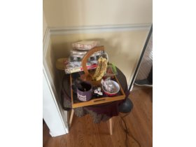
- plunger 25.13%
- Crock Pot 14.48%
- table lamp 4.11%
- teapot 3.71%
- harp 2.61%
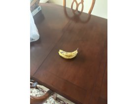
- banana 68.65%
- dining table 11.43%
- file 0.58%
- orange 0.43%
- corkscrew 0.39%
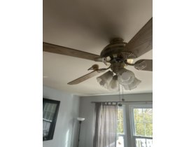
- electric fan 96.70%
- lampshade 0.34%
- window shade 0.21%
- dining table 0.20%
- chime 0.16%
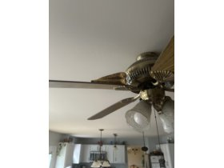
- electric fan 97.83%
- lampshade 0.50%
- wall clock 0.22%
- projector 0.11%
- hair slide 0.06%
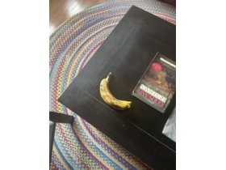
- banana 40.91%
- file 18.45%
- chest 6.44%
- lighter 3.73%
- cassette 1.69%
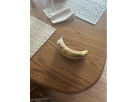
- banana 76.66%
- crossword puzzle 5.76%
- slug 5.51%
- orange 0.35%
- rule 0.35%
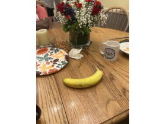
- coffeepot 48.63%
- banana 22.27%
- tray 5.53%
- teapot 2.94%
- dining table 2.44%
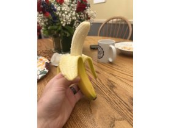
- banana 85.91%
- orange 0.27%
- ear 0.11%
- corn 0.10%
- grocery store 0.08%
cheeseburger (6 images)
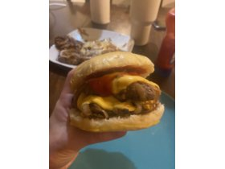
- cheeseburger 86.96%
- hotdog 0.13%
- meat loaf 0.10%
- schipperke 0.06%
- abaya 0.05%
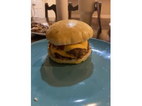
- cheeseburger 87.47%
- meat loaf 0.09%
- bagel 0.06%
- bloodhound 0.05%
- golden retriever 0.05%
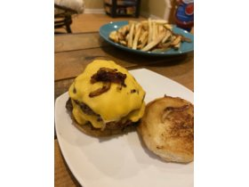
- cheeseburger 89.00%
- plate 0.17%
- mashed potato 0.17%
- bakery 0.11%
- bagel 0.11%
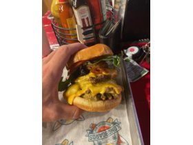
- cheeseburger 89.40%
- hotdog 0.16%
- acorn squash 0.11%
- meat loaf 0.06%
- cocktail shaker 0.06%
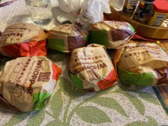
- packet 10.05%
- shoe shop 7.03%
- confectionery 5.97%
- piggy bank 3.95%
- burrito 3.08%
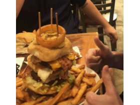
- cheeseburger 89.24%
- hotdog 0.08%
- pretzel 0.05%
- meat loaf 0.05%
- restaurant 0.05%
lakeside (6 images)
- lakeside 79.73%
- valley 3.57%
- sandbar 1.28%
- dam 1.02%
- breakwater 0.51%
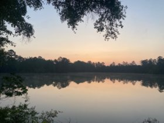
- lakeside 79.24%
- canoe 7.60%
- valley 0.67%
- boathouse 0.62%
- sandbar 0.38%
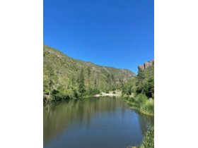
- valley 65.46%
- castle 14.13%
- alp 4.82%
- lakeside 3.28%
- cliff 2.14%
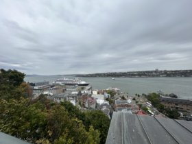
- breakwater 38.22%
- plastic bag 8.59%
- promontory 8.58%
- seashore 6.95%
- pier 4.02%
- lakeside 72.56%
- canoe 8.67%
- boathouse 1.73%
- castle 1.23%
- balloon 1.09%
- sandbar 94.86%
- lakeside 0.19%
- seashore 0.13%
- breakwater 0.10%
- West Highland white terrier 0.04%
pizza (5 images)
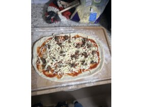
- pizza 87.13%
- carbonara 0.55%
- chocolate sauce 0.10%
- plate 0.08%
- zucchini 0.07%
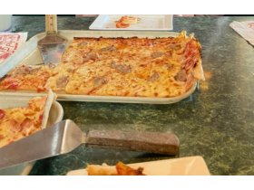
- pizza 70.81%
- meat loaf 1.00%
- hotdog 0.74%
- dough 0.63%
- king crab 0.62%
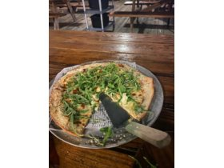
- pizza 41.85%
- spatula 37.22%
- cleaver 2.52%
- meat loaf 1.04%
- potpie 0.69%
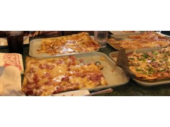
- carbonara 37.07%
- pizza 23.57%
- plate 6.43%
- tray 3.38%
- restaurant 2.04%
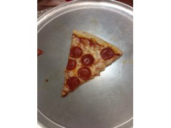
- pizza 79.64%
- wok 0.35%
- dough 0.28%
- honeycomb 0.24%
- spatula 0.14%
street sign (5 images)
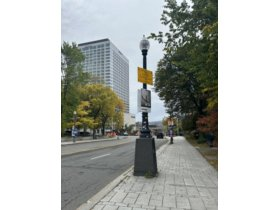
- traffic light 60.45%
- street sign 24.80%
- pole 1.09%
- obelisk 0.90%
- pedestal 0.32%
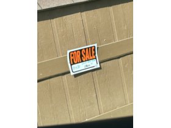
- street sign 47.34%
- barbershop 6.26%
- digital clock 5.98%
- traffic light 3.06%
- mailbox 1.90%
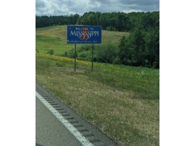
- rapeseed 76.70%
- street sign 5.24%
- alp 1.46%
- valley 0.72%
- unicycle 0.67%
- confectionery 20.67%
- bakery 13.90%
- restaurant 8.49%
- toyshop 7.13%
- carousel 6.28%
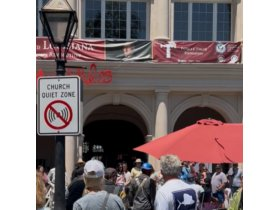
- umbrella 46.69%
- unicycle 11.92%
- street sign 10.47%
- cinema 1.69%
- restaurant 0.91%
The model does well when it is clear what the main object in the image is. Even for banana-2.jpg, while the dining table takes up most of the image, because the banana is in the middle an unobstructed, the top choice is banana. However, when the banana was unclear, like in banana-1.jpg and banana-3.jpg, the model attempted to classify another part of the image that was more prominent.
Further, the model predicted burger in all cases except when the burger was wrapped in the paper it typically comes in from a fast food restaurant. This suggests that the model is not able to infer that there is a burger in it, even when the wrapping paper clearly says 'Whopper'.
Stree sign is also very difficult to predict. In fact, the one picture that is the most clearly not a street sign (it is just a sign on a fence or house) is the only one that is classified as a street sign. This is likely because it is the only clear object in the image, while in all the other ones, there are other objects in the image which the model attempts to classify instead of the sign.
Part 2: CLIP for Image–Text Matching and Zero-Shot Classification
Task 1: Implement the similarity calculation
I reused the same 30 images and five categories with OpenAI CLIP ViT-B/32. The candidate texts were 'a photo of a banana', 'a photo of a cheeseburger', 'a photo of a lakeside', 'a photo of a pizza', and 'a photo of a street sign'. These texts are the only choices for this task's softmax and predicted category.
Similarity heatmap
The figure shows all 30 images, grouped by their assigned category. The first five columns show cosine similarity with each candidate text, shortened to category names on the axis. Their color scale runs from the smallest to the largest cosine similarity across all 30 images and five texts. The rightmost column shows the highest-scoring text's softmax probability after applying CLIP's learned scale of 100. Green means at least 50%; red means below 50%. This shows that all 30 images have the highest cosine similarity with the correct class compared to the other 4 classes.
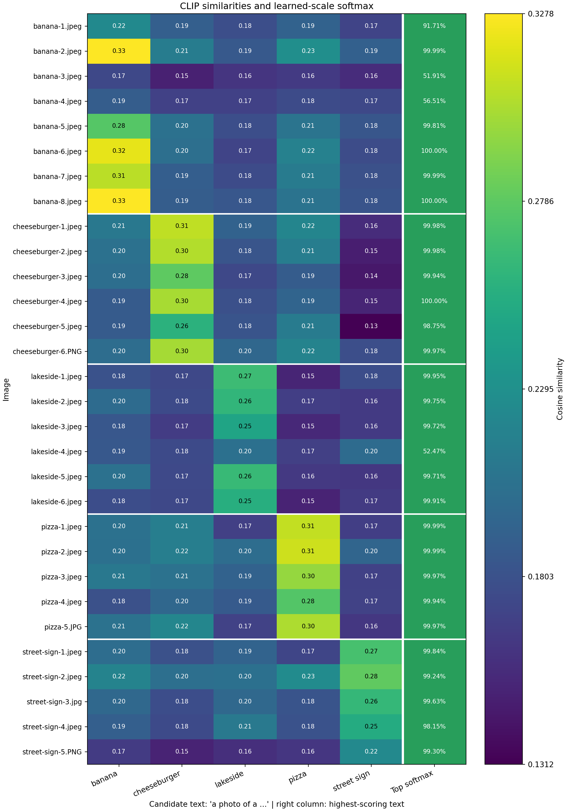
Clip multiplies the cosine similarity by a learned scale to produce a logit and softmax converts the logits into probabilities. Softmax probabilities depned on the candidate texts being compared because if they are all very small, the model will have high confidence (high probability), while higher, evenly distributed candidate logits will lead to lower confidence (low softmax probability).
Task 2: Compare prompt wording
I tested three text templates for each of the same five categories and 30 images as shown in the table below. A smaller mean cross entropy means that the prompt assigned higher probability to the correct category, indicating better performance, in general.
| Prompt template | Matching predictions | Accuracy | Mean cross entropy |
|---|---|---|---|
| {category} | 30 / 30 | 100.0% | 0.0447 |
| an image which has {category} in it | 27 / 30 | 90.0% | 0.2284 |
| a photo with a {category} | 28 / 30 | 93.3% | 0.1094 |
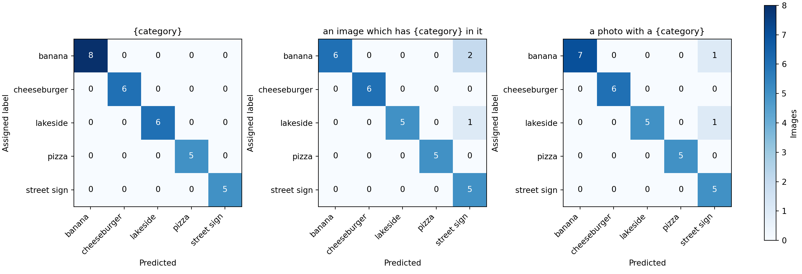
The simple {category} prompt had 100% accuracy, while the other two, which add words to the prompt, got multiple predictions wrong, but were still very accurate.
Changing the prompt does not the change the model weights, just the input text. If the embedding of the text changes, it is possible that it matches with the image embedding better or worse. This is the point of studying the effect of prompt wording on performance.
This model has higher accuracy, but that is because it compares embeddings to only the 5 classes in the subset, instead of the 1000 classes in imagenet. If the full 1000 class labels were used, then a better comparison could be made.
For banana-3.jpg and banana-4.jpg, where the banana is not the main object in the image. Therefore, adding words to the prompt which are less strict than simply {category} makes it possible that the model is less confident that there is a banana relative to other possible items. So, relatively, the confidence that the image has a banana in it is lower, causing the model to predict a different class.
Task 3: Explore the representation space
I dot product of every pair of the 30 images. This gives a 30 × 30 image–image cosine similarity matrix. A larger value means that CLIP placed two photos closer together in its image representation. The diagonal is 1 because each image is compared with itself.
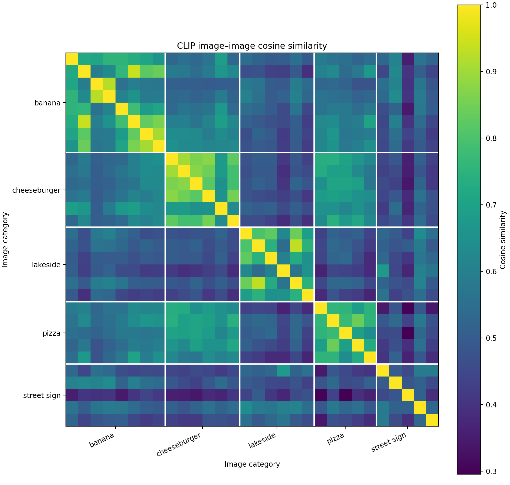
Similar Image Pairs
Image pairs with higher similarity are shown below. Some pairs are within the same class and it is clear why they are similar. Some pairs are from different classes, and the similarity it lower, but still makes sense. For example, the cheeseburger and pizza pictures are both taken at a restaurant, and the street sign and lakeside pictures are both taken in a city (they are actually both taken in the same city, unlike the other street sign and lakeside images) In both of these cases, the background is likely causes much of the similarities.
Part 3: A Controlled Study of CLIP’s Limitations
Task 1: State a hypothesis and construct comparisons
I photographed the same chair and added one banana at a time, up to 14 total bananas. I wanted to study the problem of if a banana is present in the image, but another object is more dominant, how many bananas would it take until the model classified the image as 'banana' instead of, in this case, 'chair'. I used CLIP to compare image embeddings to text embeddings for 'chair' and 'banana'. The image-text cosine similarity of each image with 'chair' and 'banana' text embeddings are shown in the figure below, where the number of bananas is shown on the x axis.
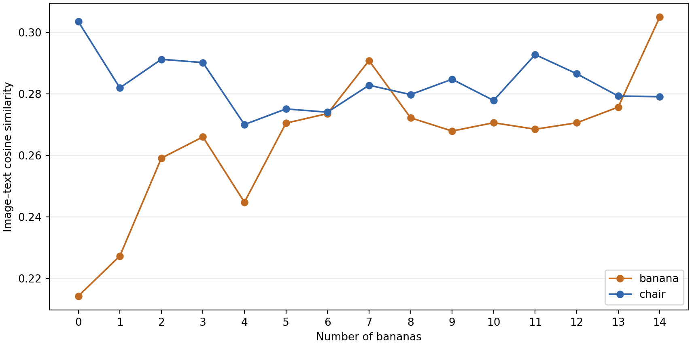
Task 2: Evaluate and Visualize
While there is noise in the results, there is a clear increase in similarity with 'banana' as the number of bananas increase, while the similarity with 'chair' is relatively steady. This suggests that the image embedding can include information for both banana and chair, without having to represent one over the other. However, because we are asking the model for just one class, it chooses the one with highest similarity, which is not clear after about 7 bananas are in the image.
Chair and banana scores for every image
The images, as well as the cosine similarity with each class, are shown below.
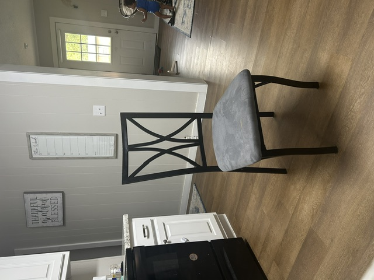
- chair 0.3035
- banana 0.2142
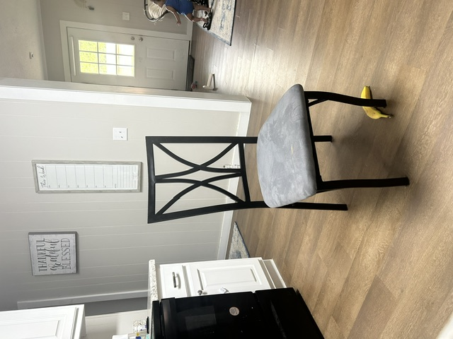
- chair 0.2819
- banana 0.2273
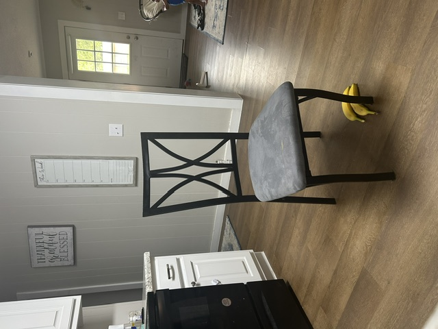
- chair 0.2912
- banana 0.2591
- chair 0.2901
- banana 0.2660
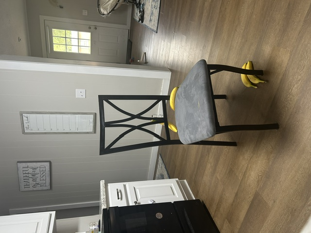
- chair 0.2700
- banana 0.2447
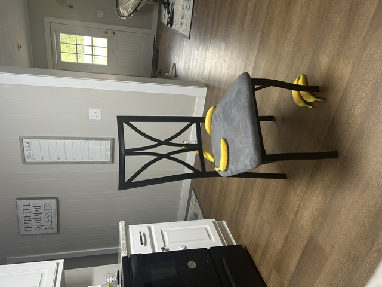
- chair 0.2751
- banana 0.2704
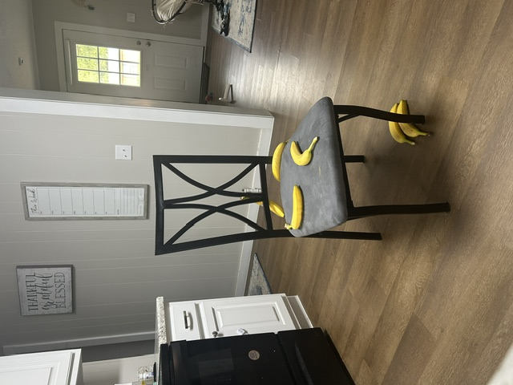
- chair 0.2740
- banana 0.2736
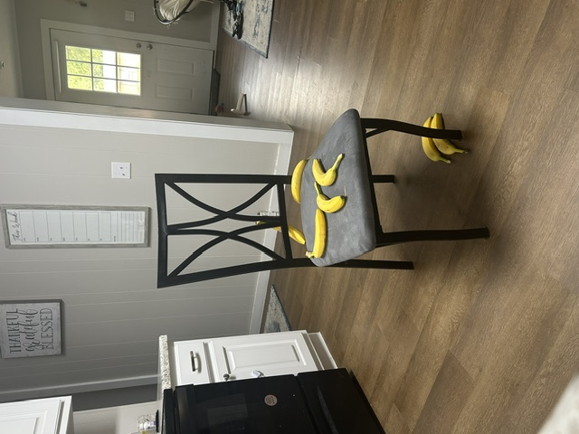
- banana 0.2908
- chair 0.2828
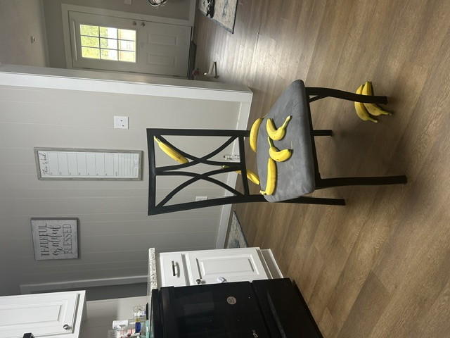
- chair 0.2797
- banana 0.2722
- chair 0.2847
- banana 0.2679
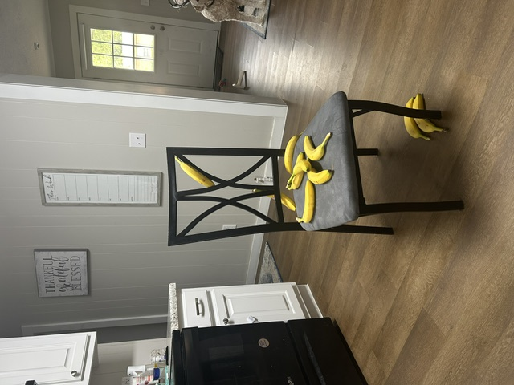
- chair 0.2778
- banana 0.2706
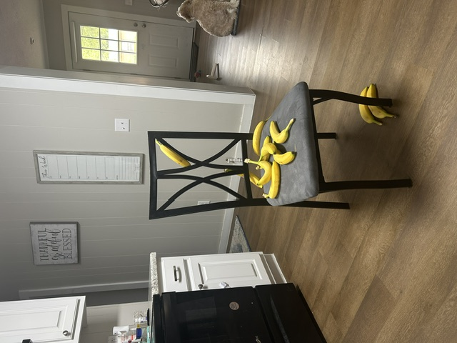
- chair 0.2927
- banana 0.2685
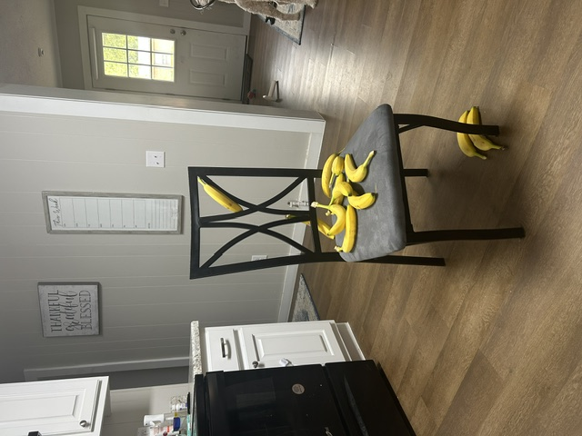
- chair 0.2865
- banana 0.2706
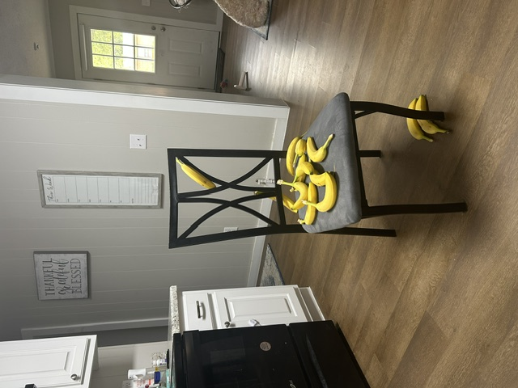
- chair 0.2793
- banana 0.2757
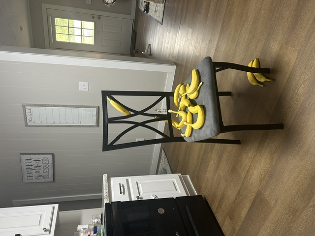
- banana 0.3049
- chair 0.2790
Task 3: Testing one explanation
Because the images with bananas and the chair have higher similarity with both 'banana' and 'chair' embeddings, it is likely that the image embeddings include both objects. Therefore, I included a third class, 'chair and banana', and calculate the similarity of each image embedding with the embedding of this text. This is compared to the original class labels in Figure 7. The cosine similarity with this class is higher than either individual class whenever at least one banana was in the image.
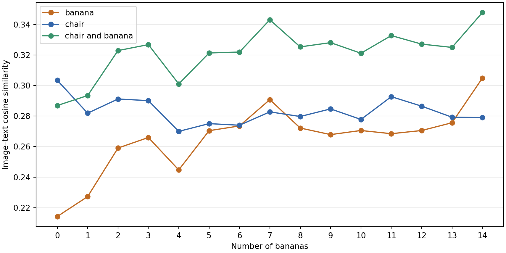
This confirms the hypothesis that the image embedding includes information about both chair and banana, but the class labels are too restrictive to predict accurately. This is a shortfall of CLIP, where class labels are limited. While they can be artificially made to be more complicated, it is not possible to include all combinations of objects. Therefore, a model which can generate the caption for the image, like LLaVA, may be more suitable for this kind of task.